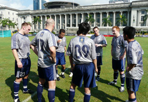
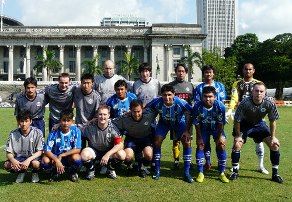

|
Singapore Cricket Club, Weekend, May 23rd/24th
Fresh from their TML title victory, YC&AC flew to Singapore to play in the Singapore Cricket Club Soccer 6's Tournament on May 23rd to have a go against some of the most notorious opponents in the Asian football scene.
The TML champs introductory game was against the tournament favorite and ‘07-‘08 Thai Premiership winner, Chonburi FC. The game was composed of a series of fairly even attacks at both ends; and while YC&AC had a couple of chances to score, Chonburi knew a bit better how to play under the ceaseless Singapore sun. In the end, the two goals which were plundered in the late second half were more than a safety net for the Chonburi side that had previously tied against J-League Gamba Osaka in the Asian Champions League last season, giving them a 2-0 victory.

Defeated, but showing the hearts of champions, YC&AC demonstrated their inherent talents with two convincing victories against some local semi-professionals. First, a shutout against the Orchard Rovers (2-0), then a goal -rush against the Singapore Malays (6-1) pushed our squad to the most goals tallied in our group, and for the tournament. Our scoring outburst was definitely one of the highlights of the tournament, and vaulted the status of YC&AC from underdogs to contenders.
In the knock-out stage of the tournament, YC&AC faced the International Soccer Academy (ISA); a team with former Thai National Team players with World Cup Qualification match experience. ISA didn't appear to be an adversary impossible to topple but with a quick succession of goals in the second half, YC&AC’s chance to proceed to the second round was hauled down 3-0.
With a bit of international experience under their collective belts, the team has gained some more confidence in their style. This, with a series of intensive training sessions on Wednesday nights, YC&AC is looking to defend their TML title for the upcoming season.

Tour members: Nobuhiro KOKA(GK), Kazuki OSHIMA, Kaname SHOOT, Anthony SAVAGE, Russ PHILP, Jon ANGELUCCI, Tyson MASAR, Shigehiro YAMAZAKI, Hisao YASUDA, Joe TAKEDA
For more about the tournament read... http://www.sccsoccersixes.com/
Report by Joe Takeda
|